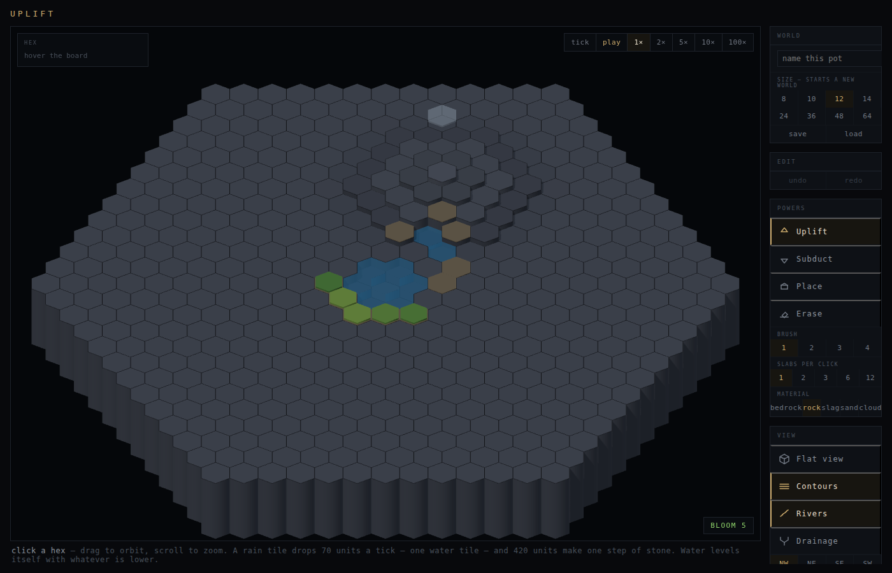

Design document · v0.1 · plan before code
A plain-language walk through the whole design — what the world is, what you do in it, what you win, and how we will build it in order. Written so that anyone on the team can read it cold, argue with it, and sign off before the next line of code.
Contents
Sections 01–04 describe what is already true in the code. Sections 05–13 are the game we are about to build; every number in them is a first guess to be tuned by playing, and is flagged as such. Section 15 is the order we build in. Section 16 is the list of things you need to confirm or veto — that is the page to answer.
The razor, kept on the wall
If a thing could be done by placing pre-made objects on a fixed map, we have slid into Islanders. Back up. The score must come from the world, never from the placement.
01
The hook
The only builder where you place nothing. You shape the ground, and a living world grows itself.
You have a small disc of bare rock — a pot. You can raise it, dig it, and hang rain over it. That is nearly all you can do. Water then finds its own way: it pools in the hollows you dug, runs off the hills you raised, and where it settles or flows, soil gathers and life takes root. You never paint a lake or plant a forest. You cause them.
The game around that toy is a run: eight Years in one pot. Each Year you spend a small budget of mana shaping the ground, then the Year ends in a Harvest where the world is scored by how much of it is alive — its Bloom. The Bloom you need rises every Year. Between Years, a Spring shop sells Boons (permanent bonuses) and Seed cards (new kinds of life), and those shape your build. Fall short of the Bloom you need and the run ends; reach Year 8 and you behold what you grew.
That is it: shape → the world responds → score what emerged → the bar rises → shop → shape again. Islanders' skeleton, Balatro's spine, and a verb no one else has.
You shape terrain. Water, soil and life are computed by the world, never dropped by you.
The world is deterministic. The same ground always gives the same world; the preview cannot lie. Skill is foresight.
Every run ends in a living world you made from bare rock. That is the felt moment and the trailer's last shot.
Not a mobile snack, not a $5 toy, not a random slot machine bolted to a world. Steam, ~$13, showcase-grade.
02
The bench is a single HTML file with a hex-grid simulation and a 3D renderer. It has no goal, no score and no failure — it exists to find out which mechanics are worth keeping. Everything below has been measured, not guessed.

What was deliberately stripped out while the water was built and is still out: a sea, a pot wall, moisture and heat auras, lava and basalt, and the old instant-solve model. Life came back today, on the water's terms (section 03).
03
This is the whole simulation. If a mechanic cannot be stated as one of these rules, it is a new rule and gets decided, not drifted into.
Every hex is a stack of slabs. A slab is 70 units tall; six slabs make one elevation step (420 units). Two materials matter: bedrock, the floor, which nothing in the world can wear away; and rock, which weathers. A cloud is also a thing in the stack, hanging high above the ground.
A rain tile drops 70 units of water on the column under it, every tick. Two stacked rain tiles drop twice as much.
One elevation step is 420 units; one drawn water tile is 70. Water under 70 units is there but not drawn.
A hex's height is its ground plus the water standing on it.
A hex with water pours into whichever neighbours stand lower, until it and all of them are at one height.
Off the edge of the disc is lower than anything. Water that reaches the rim leaves and is gone.
Consequences you can rely on: a basin fills to its brim and then overflows; a lake stands level; a dug channel becomes a river; water on flat ground spreads into an invisible film; the outer ring always drains. A board with no cloud on it is perfectly still.
Exposed rock slowly weathers into slag, loose rubble lying on the column. Slag rides the water: it moves through the same edges the water moved through, and only when the water is strong enough (moving water down a drop). Where the water slows or the ground flattens, slag stays — so fans form at the foot of slopes and lakes silt up, with no deposition rule needed. Slag that travels grinds into sand, which is finer and moves more easily. Grit dragged across bare rock cuts it (abrasion), which is how a river carves a valley. A blanket of slag shields the rock under it, so a mountain with nothing to carry its rubble away stops weathering: to lower a mountain you have to route water over it.
A hex is habitable when it has a course of loose ground to root in (70 units of slag or sand), is not drowned (under a drawn water tile), and has water in reach: a shore (a drowned neighbour) or a bank (a river edge on it or beside it).
Life spreads one hex a tick, to any habitable hex beside a living one. A hex that stops being habitable dies that tick.
Life binds the ground it stands on: a living hex sheds no soil and weathers no rock.
Life asks for water you can see — a lake tile or a river — not the invisible film. That is why green appears along shores and banks and nowhere else, which is exactly the picture we want. A seed is the only thing you contribute: it roots one hex if the world has made that hex habitable, and does nothing otherwise. Nothing germinates on its own. Where you sow is a decision.
Measured today
A settled lake with a course of soil on its 12-hex rim, one seed: alive per tick 3, 5, 7, 9, 11, 12. It holds for 600 ticks without a flicker, and through the rain coming back. Roots keep 169 of 210 units of slag that a bare slab lost entirely. Rock under roots does not weather at ten times the default rate. With no seed sown, 40 of 40 random boards are bit-identical to the previous build.
04
Every power is aimed with a brush (1, 7, 19 or 37 hexes) and a depth (1, 2, 3, 6 or 12 slabs). Every click is one tick of the world — the weather runs while you sculpt.
| Power | What it does | What it is for |
|---|---|---|
| Uplift | Adds slabs on top of whatever the column already has — rock on rock, bedrock on bedrock. | Hills, ridges, dams, walls. Relief is where soil is born. |
| Subduct | Takes slabs off the top. Never touches the sky (you can dig under a cloud). | Basins for lakes, channels for rivers, an outlet to drain a lake. |
| Place | Lays down what the palette says: rock, bedrock, slag, sand, a cloud, or a seed. | Rain is the only water source. Slag is soil you can lay by hand (it costs mana; the world makes it for free, slowly). |
| Erase | Takes away only the palette material from the top. Erase rock and the bedrock under it is safe; erase a cloud and the ground is untouched. | Stopping the rain. Clearing a seed. Undoing a placement precisely. |
Two arrangements were tried and rejected on the bench and stay rejected: a cloud "power" that toggled (clicking three-then-three gave three, not six), and Subduct removing clouds first (you could not dig under rain). A rain tile is a material; Subduct means one thing.
Why this matters for the game
These four verbs and the eight rules above are the entire surface the player learns. Everything in sections 05–12 is framing, budget and scoring around them. No new world rules are proposed in this document. Richness has to come from how few pieces interact, never from adding pieces.
05
A run is one pot, eight Years. The same board grows for the whole run; it is not a chain of separate islands. Here is one Year, in order.
The Year has twelve Moons. Each Moon you either act (a power click, which costs mana) or rest (let the world run, free). Either way the world advances twelve ticks — enough for water to walk twelve hexes and life to spread twelve hexes along a shore. You can see the Bloom counter the whole time; there is no hidden information.
reads the world · spends mana · spends Moons
When the twelfth Moon is spent, the world is scored exactly as it stands. No extra simulation, no hidden roll: what you see is what you score. Bloom = living hexes × (1 + the sum of your Wonders). Section 08 has the arithmetic.
produces Bloom
Each Year has a target Bloom. Meet it and you continue. Miss it and the pot rests: the run ends on the Behold screen, gently, with what you grew. There is no other punishment in the game.
the only fail state
You earn Dew from how far you cleared the bar. The shop offers three Boons and two Seed cards; buy what you can afford, skip what you do not want. Then the next Year begins on the same pot, with a higher target.
produces a build
Eight Years, one pot. Year 1 is a puddle and a patch of moss. Year 8 is a world.
06
The bench runs one tick per click and lets you play time freely. The game gives time a shape, because a score needs a moment to be counted at.
Flagged: numbers to tune
12 ticks a Moon and 12 Moons a Year are the first guess. The test is whether a Year feels like a Year: a change you make early should be visibly answered by the world before Harvest, and a change in the last Moon should feel like a gamble on foresight rather than a nothing. We will tune by playing, not by argument.
07
Mana is what makes a decision cost something. In the fiction it is what Gaia grants her hand each Year. In the design it is Islanders' limited supply of buildings, and it is the reason a wide brush is a real choice rather than the obvious one.
| Brush | Hexes | Cost |
|---|---|---|
| 1 | 1 | ×1 |
| 2 | 7 | ×2 |
| 3 | 19 | ×3 |
| 4 | 37 | ×4 |
| Depth | Slabs | Cost |
|---|---|---|
| a course | 1, 2 or 3 | ×1 |
| a step | 6 | ×2 |
| two steps | 12 | ×3 |
| Special cases | Cost | Why |
|---|---|---|
| Place a cloud | 3 per rain tile | Rain is the only source of water and the most powerful thing on the board. Stacking clouds multiplies both rain and cost. |
| Erase a cloud | 0 | Stopping the rain should never be a trap. |
| Place slag or sand | brush × depth, as rock | Hand-laid soil is allowed but priced like earthwork. The world makes soil for free; you pay for impatience. |
| Sow a seed | 1, and a Seed card in hand | Cheap, because it only works where the world already agrees. |
| Erase a seed | 0 | Clearing life is never something you should hesitate over. |
The larger the brush, the cheaper each hex: 37 hexes for 4 mana against 1 for 1. That is on purpose — bold earthworks are what make interesting water, and we want to reward them, not tax them. The counterweight is that a bold move is a commitment you cannot afford to undo.
Flagged
10 mana a Year and the cost tables are a first guess. The check: a first-Year player should be able to dig one basin, hang one cloud and sow one seed with a little to spare (1 + 3 + 1 = 5, plus a hill for 2), and a Year-6 player with two mana Boons should be able to do one grand thing.
08
The formula
Bloom = living hexes × (1 + sum of Wonder bonuses)
Two halves, like chips and mult. The first half is honest counting: how many hexes are alive at Harvest. The second half rewards the shape of the world you grew, and that is where builds live. Both halves are read straight off the world; nothing you placed scores by itself.
| Year 3, at Harvest | Value |
|---|---|
| Living hexes | 22 |
| Wonder · The Lake (a still body of 3 or more) | +0.5 |
| Wonder · The River (four linked river tiles) | +0.5 |
| Wonder · The Ring of Life (a lake fully ringed by life) | +1.0 |
| Multiplier | 1 + 2.0 = 3.0 |
| Bloom | 22 × 3.0 = 66 |
| Year 3 target | 25 |
| Surplus | 41 → Dew earned 2 + 41 ÷ 5 = 10 (cap 10) |
| Year | 1 | 2 | 3 | 4 | 5 | 6 | 7 | 8 |
|---|---|---|---|---|---|---|---|---|
| Target Bloom | 8 | 15 | 25 | 40 | 60 | 90 | 130 | 180 |
| Roughly means | a puddle and a patch | a shore | a lake with a shore and a river | two bodies, one Wonder | a build forming | a valley system | most of the pot | a world |
Year 8's target of 180 on a 469-hex pot is 60 living hexes at ×3 — a real world, not a green disc. The curve rises about ×1.5 a Year, and a build that only counts hexes (no Wonders) stalls around Year 5. That is the intended pressure toward shape.
Flagged
Every number on this page is a first guess. The shape is not: counting × shape, a rising bar, surplus becoming shop money.
09
A Wonder is a thing the world can be, detected from the world's own state at Harvest. They are the Water Codex's phenomena given a number. Each one you have at Harvest adds its bonus to the multiplier. Having a Wonder for the first time also opens its Codex page — the cozy discovery layer and the score layer are the same list.
| Wonder | What it is, in plain words | How the game detects it | Bonus |
|---|---|---|---|
| The Lake | Still water resting in a basin, three hexes or more | a connected group of ≥3 drowned hexes with no flow | +0.5 |
| The Great Lake | A sea in a pot | as the Lake, ≥12 hexes (replaces it) | +1.0 |
| The River | A channel that carries water tile after tile | a chain of ≥4 hexes each sending ≥ a river edge to the next | +0.5 |
| The Waterfall | A river spilling over a real cliff | a river tile whose downstream drop is ≥2 steps | +0.5 |
| The Fork | One hex sends its water two ways | ≥2 river edges leaving one hex | +0.25 |
| The Delta | A river fanning into the edge of the pot | a fork within 2 hexes of the rim with ≥2 exits to the void | +0.75 |
| The Island | Dry land ringed entirely by water | a dry group whose every neighbour is drowned | +1.0 |
| The Ring of Life | A lake wholly encircled by living shore | a Lake all of whose rim hexes are alive | +1.0 |
| The Grove | A living patch that remembers itself | a connected living group of ≥7 hexes (each such group) | +0.25 each |
| The Terrace | Life holding soil on a slope bare rock could not | ≥5 living hexes with a higher and a lower neighbour | +0.5 |
| The Highland Meadow | Life coaxed onto high ground | ≥3 living hexes at height ≥3 | +0.5 |
| The Watershed | One cloud's water reaching two edges | one catchment with ≥2 distinct outlets to the void | +0.75 |
Twelve to start; the list is open-ended by design. Every detector reads only what the simulation already stores or derives, so the world awards them itself — no hand-authored levels, no scripting. Determinism makes the award trustworthy: the same pot always has the same Wonders.
Design note
Wonders are deliberately about water and shape, not about life, except where life meets water (the Ring, the Terrace, the Meadow). The count half of the score is life; the shape half is the world. Keeping them separate is what stops the optimal play from being "cover everything in moss".
10
The one decision the bench already asks — where do you sow? — becomes two: where, and what? A Seed card is a kind of life with its own habitability rule and its own worth. Your deck starts with three cards; each Year you draw a hand of three, and a sown seed spends the card until next Year. The shop sells new ones. This is the "card" in the design and it is squarely on the right side of the razor: a seed only takes where the world makes room for it.
starter · ×1
Roots on bare rock — needs water in reach but no soil. Worth ½ a hex. Does not bind soil. The first green you will ever see, and never the last.
starter · ×2
The rule in section 03 exactly: a course of soil, not drowned, a shore or a bank. Worth 1. Binds soil. The backbone of every build.
shop · 2 Dew
Lives up to one water tile deep on soil — a wetland. Worth 1. Turns a lake's shallow margin into life and enables the Ring of Life on lakes with no dry rim.
shop · 3 Dew
Banks only (a river edge on it or beside it). Worth 1. Spreads two hexes a tick along the river, and holds slag twice as firmly. The river build's engine.
shop · 3 Dew
Needs soil and height ≥ 2; spreads only every other Moon. Worth 2. The Highland Meadow's tree, and the reason to raise land before you water it.
shop · 4 Dew
Lives on still water instead of ground (drowned, no flow). Worth 1. A lake stops being empty space in the count. Dies the moment the lake moves — an outlet kills a lotus field.
Six kinds is the whole roster for the first playable; three (Moss, Grass, Reed) are enough for the vertical slice. Each species is one line of rule in the habitability check, not a new system — the same eight rules with one clause changed. That is the constraint on adding more: if a species needs a rule the world does not already compute, it does not go in.
Decision · cards are seeds, not powers
The alternative — a hand of shaping cards (Uplift ×7, Cloud, …) — was considered and set aside. It fights "free-shape": you should be able to dig this hex now. Seeds give the deck-building lever without taking the sculpting away, and they are the only card that passes the razor cleanly.
11
A Boon is a permanent change to the rules of your run. Balatro's Joker; Gaia's gift. Three are offered each Spring, from a pool, chosen by a seeded shuffle so the same run seed always shows the same shop. You may hold at most five. The first twelve:
| Boon | What it changes | The build it feeds | Dew |
|---|---|---|---|
| Monsoon | Every rain tile drops 1.5× the rain. | wet · big lakes fast | 5 |
| Wellspring | +3 mana every Year. | any | 6 |
| Long Summer | +3 Moons every Year (15 instead of 12). | slow builds · Pine | 5 |
| Deep Roots | Life survives one water tile of flooding. | lake · flood-and-drain | 4 |
| Basalt Heart | Uplift and Subduct cost one step less (a step costs ×1, two steps ×2). | earthworks · mountain | 6 |
| Beaver | Slag carried by a river is dropped on its banks instead of carried on. | river · Willow | 5 |
| Silt | Sand counts double as soil (half a course is enough). | delta · fan | 4 |
| Terraces | Every Terrace Wonder is worth +1.0 instead of +0.5. | highland | 6 |
| Lake Heart | Every Lake and Great Lake is worth +0.5 more. | lake | 6 |
| Migrating Birds | Each Spring, the habitable hex farthest from any life is sown with Grass for free. | spread · any | 4 |
| Gaia's Patience | Targets rise by ×1.35 a Year instead of ×1.5. | cozy-leaning runs | 8 |
| Old Growth | Life that has stood for three Years or more counts double. | patient builds | 7 |
Two things to notice
No Boon adds randomness. "Migrating Birds" picks the farthest hex, not a random one. One Boon needs new state: Old Growth needs each living hex to remember how many Years it has stood, which the bench does not store. It is listed so that the cost is visible; it is the last one we build, if at all.
The Bloom arithmetic, line by line, on the diorama. Which Wonders fired, which just missed. This screen is the teacher.
Base 2, plus surplus, plus interest. Shown as a sum, not a number.
Buy any, skip any. A reroll costs 2 Dew. Nothing is timed.
Mana refills, a hand of three seeds is drawn, the target is shown, and the pot is exactly where you left it.
12
A build is not a menu you pick from. It is what happens when a few Boons, a few seeds and the shape you have been carving start to agree with each other. Four that fall out of the pieces above:
Dig one deep basin early; Monsoon fills it fast; Reed rings its shallows, Lotus covers its face, Grass its rim. Ring of Life + Great Lake + Lake Heart. Fragile: an outlet, or a Year of drought, unmakes it.
A long channel from a high cloud to the rim. Willow runs its banks two hexes a Moon; Beaver drops slag on those banks so they stay habitable; Waterfall, Fork and Delta stack. Cheap in mana, greedy in Moons.
Raise a massif in Year 1 and let it weather; Pine on the slopes, Terraces on the shoulders, tarns in the folds. Basalt Heart makes it affordable; Long Summer gives the slow Pine time. Scores late, scores big.
Many small lakes, Grass everywhere, Migrating Birds seeding the far corners, Wellspring paying for the digging. Wins on count, weak on Wonders; stalls near Year 5 unless it finds a shape.
The three sources of variety the design plan asked for are all here: situation (the starting pot — a seeded, deterministic shape: a few hills, a hollow, some rubble), build (Boons and seeds), and goal (which Wonders you chase to clear the bar). Every run is different; no run is random once it has begun.
Could any of these be done by placing pre-made objects on a fixed map? No. Every one of them is a shape the water agrees with, or it is nothing.
13
Cozy is a mode, not the spine. It is the same game with the pressure removed, for the player who wants the toy, the Codex and the diorama, and it is also our on-ramp and screenshot engine.
Cozy mode ships in the demo. It is the mode a jury member will open first, and the one that makes the GIF.
14
The art budget is a palette, a light, a camera and a post-process — the four things a programmer controls, and the four things Tiny Glade and Townscaper won with. No bought assets touch the hexes, the water or the terrain: they are the identity.
A diorama orbit: pitch held between about 30° and 50° above the table, yaw and zoom free, orthographic by default. Every angle is a good angle and the hex grid reads from all sides.
exists today as a free orbit · one constraint to add
Eight to twelve warm, harmonious colours, and every material painted from them: two stone ramps (bedrock cool, rock warm), slag, sand, water, river, cloud, two greens for life, a dusk background. Written down once and used everywhere.
biggest single free upgrade
A warm sun with soft shadows raking across the hexes (the shadow map exists), a cool-warm hemisphere for sky and bounce, a faint fill. The sun stays a hand-set viewing control, never tied to the clock.
exists · retune colours and strengths
A single full-screen shader written by us (no library): warm colour grade, a soft vignette, a gentle bloom on the water, and a tilt-shift blur that sells the miniature. Toggleable from View so the bench can compare.
new · about 150 lines
Depth-graded colour, a slow ripple, foam where a river meets a lake. Phase 1, after the game layer exists; the hero visual for the trailer.
parked
Everything here is reversible and lives entirely below the simulation. It can be done in a day and it is scheduled as step 2 of the plan because the game-layer screens (Harvest, Spring) need to be designed on the real look, not the bench's.
15
Ten steps, each one small, each ending in something you can play and a number we can measure. We stop after every step and play it before the next. The ordering is a dependency chain: each step needs the one before it and nothing after it.
Rules 6–8, seed on the palette, Bloom counter. Measured and pushed today.
proves · life reads from water and soil without an aura · status done
Section 14, items 1–4. Screenshot before and after at radius 12 and 36.
proves · the look is ours · about 1 day
The twelve detectors, a Harvest readout showing the arithmetic, a "Harvest now" button on the bench. No Years yet — this is the bench with a score you can read at any moment. This is the reversible Step-1 experiment from the strategy note: is beating your own Bloom fun on this sim?
proves · the score comes from the world · about 2 days · gate: go / no-go
Section 05–08: the Year loop, mana costs, targets, the pot resting. No shop yet; Dew is counted and shown but buys nothing. Play three full runs.
proves · the loop has tension · about 2 days
Deck, hand, draw, the three starter kinds. Each kind is one clause in the habitability rule.
proves · "what to sow" is a decision · about 1 day
Dew, the shop screen, reroll, the first six Boons (Monsoon, Wellspring, Long Summer, Deep Roots, Basalt Heart, Lake Heart). Builds start to exist.
proves · builds emerge · about 2 days
A deterministic starting shape from a seed number; the same seed always gives the same pot and the same shops. Daily seed for free.
proves · variety without randomness in play · about 1 day
The end-of-run diorama with photo mode; the cozy toggle; the Codex notebook.
proves · the felt moment · about 2 days
Willow, Pine, Lotus; the remaining Boons; Requests in cozy mode. Only after steps 3–6 have been played and survived.
about 3 days
Onboarding without text walls (the first Year teaches by a fixed starting pot), the capsule, the GIF, the Steam page. Next Fest is the target.
about 1 week
Working rules for the build
One step at a time. Every rule is discussed before it is coded. Every claim comes with a number. The simulation stays a pure function of what is stored; the game layer sits above it and never reaches in. You test; I measure.
16
The board persists across all eight Years; it is not a chain of islands. The world ages, and Year 8 stands on Year 1.
alternative · a new, larger pot each Year (Islanders) · rejected because the world has to remember itself to be worth beholding
The bench's "one click, one tick" becomes a game-layer setting. The core is untouched.
alternative · real-time with pause · rejected: nothing may move while you think
Shaping stays free-form and mana-priced; the deck is what you can sow.
alternative · a hand of shaping cards · set aside, see section 10
Mana (per Year, for actions) and Dew (carried, for the shop). One currency was considered and makes saving for the shop fight spending on the board.
Living hexes times one plus the sum of Wonder bonuses. Wonders are about water and shape; the count is about life.
So soil visibly appears within a run. The bench keeps its slider.
Missing the bar ends the run on the Behold screen. Nothing is lost that was not already grown.
The run seed fixes the starting pot and every shop. Everything else is deterministic.
Too few and the world does not answer you within a Year; too many and a late move is meaningless. Decide by playing step 4.
Counting exactly what stands is honest and previewable. A free settle before counting is kinder to slow builds. Recommendation: count what stands.
It is the only proposal that adds stored state. Recommendation: leave it out until a build needs it.
12 (469 hexes) is the working guess. 14 (631) gives more room for a Watershed. Decide when the Year-8 target is tuned.
Placing slag is allowed and priced like earthwork. If playtests show players skipping weathering entirely, raise its cost or remove it from the game palette.
17
| pot | the disc of hex columns you play on |
| tick | one step of the simulation; water and life move one hex |
| Moon | 12 ticks; the cost in time of one action or one rest |
| Year | 12 Moons, then Harvest |
| run | 8 Years in one pot |
| mana | the per-Year action budget; 10 to start |
| Dew | shop money, earned from surplus Bloom, carried between Years |
| Bloom | the score: living hexes × (1 + Wonder bonuses) |
| Wonder | a shape the world can be, detected at Harvest, worth a bonus |
| Seed card | a kind of life you can sow; the deck is what you own, the hand is what you can sow this Year |
| Boon | a permanent rule change for this run, bought in Spring |
| build | the way your Boons, seeds and shape agree with each other |
| slab | 70 units of rock; six make an elevation step |
| slag / sand | loose ground, made by weathering, moved by water; what life roots in |
| drowned | standing under a drawn water tile (70 units or more) |
| shore / bank | beside a drowned hex / on or beside a river edge |
| Behold | the end-of-run screen: the diorama, photo mode, the run's story |
Mountains in a Pot · design v0.1 · written to be argued with · the code on the branch is the source of truth for sections 02–04; this document is the source of truth for 05–16 until it is overtaken by play.